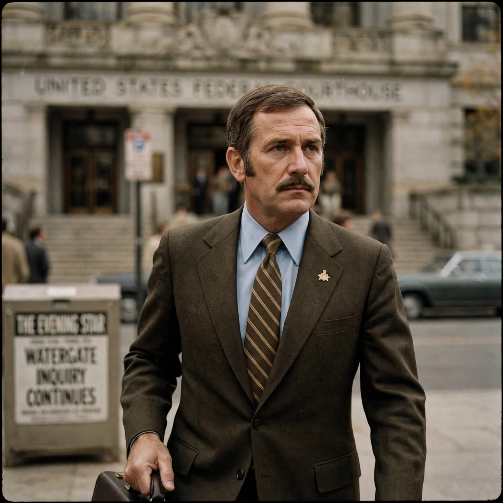

| E. Howard Hunt | |
| Born | Everette Howard Hunt Jr., 9 October 1918, Hamburg, New York, U.S. |
|---|---|
| Died | 23 January 2007 (aged 88), Miami, Florida, U.S. |
| Occupations | CIA officer, White House aide, novelist |
| Known for | Role in the Watergate scandal; "Plumbers" operations |
| Criminal charges | Conspiracy, burglary, wiretapping (Watergate); served 33 months |

Everette Howard Hunt Jr. (October 9, 1918 – January 23, 2007) was an American intelligence officer and author. A longtime CIA operative, he became a central figure in the Watergate scandal as a member of President Richard Nixon's "Plumbers" unit.
Hunt joined the wartime OSS and then the CIA, serving in political-action operations including the 1954 Guatemalan coup (Operation PBSUCCESS) and preparations connected with the Bay of Pigs invasion of Cuba in 1961. He recruited many of the Cuban exile operatives who later worked with him at the White House. In parallel, Hunt wrote dozens of spy novels under his own name and pseudonyms.
Recruited in 1971 by White House aide Charles Colson, Hunt joined the Special Investigations Unit — the "Plumbers", created to stop leaks after the Pentagon Papers. With G. Gordon Liddy, he directed the September 1971 burglary of the office of Daniel Ellsberg's psychiatrist, Dr. Lewis Fielding, in Los Angeles, searching for material to discredit Ellsberg. In 1972 Hunt and Liddy supervised the break-ins at the Democratic National Committee in the Watergate complex. An address book in Hunt's White House safe, naming him and a White House telephone number, was instrumental in tying the burglars to the administration.
Hunt pleaded guilty to conspiracy, burglary and wiretapping, pressured the White House for hush money for the defendants through his lawyer, and ultimately served 33 months in federal prison. His wife Dorothy was killed in the crash of United Air Lines Flight 553 in December 1972 while carrying cash later linked to the affair.
After prison, Hunt lived in Miami and continued writing memoirs and fiction. He died of pneumonia in 2007.